Guide complet : alimentation, RS485, Waveshare Ethernet, rétro‑ingénierie Modbus et dashboard Mushroom
11 juillet 2026 — 1.1
Retour d’expérience reproductible. Ce guide décrit une intégration réellement montée et validée : un régulateur de piscine Syclope HydroTouch CHY0444 est lu en Modbus RTU via son port RS485, encapsulé dans TCP par un serveur série Waveshare RS232/485/422 TO POE ETH (B), puis intégré nativement dans Home Assistant.
Les deux mesures finales ont été vérifiées simultanément sur l’écran du Syclope et par lecture logicielle : pH ≈ 7,17 et Redox ≈ 882 mV.
. Les adresses IP visibles sont des exemples, les adresses MAC et identifiants matériels ont été masqués, et aucune donnée d’authentification n’est publiée. Matériel testé : Syclope CHY0444 et Waveshare firmware V1.452 ; validation réalisée le 11 juillet 2026.
L’architecture obtenue est la suivante :
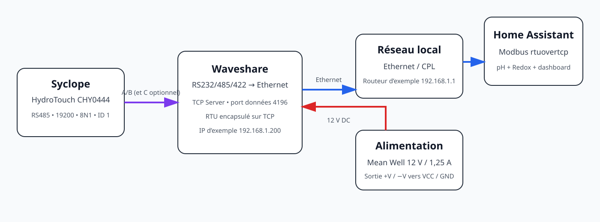
Le résultat dans Home Assistant est constitué de deux entités :
sensor.syclope_phsensor.syclope_redoxet de deux cartes Mushroom colorées selon des zones d’attention :
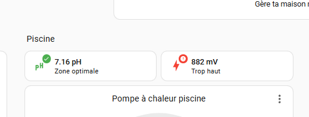
Dans l’exemple réel :
Ces couleurs sont des seuils d’affichage personnalisés, pas des instructions de dosage. Elles doivent être adaptées au bassin, au traitement utilisé, aux recommandations du pisciniste et aux consignes du fabricant.
| Élément | Statut |
|---|---|
| Communication physique RS485 | Confirmée |
| Transport réseau | Confirmé : RTU over TCP, port 4196 |
| Adresse esclave | Confirmée : 1 |
| Paramètres série | Confirmés : 19200 bauds, 8 bits, sans parité, 1 stop bit |
| Fonction de lecture | Confirmée : 03 Holding Registers |
| Fonction 04 | Refusée par le Syclope : Illegal Function |
| Registre pH | Confirmé : PLC 41203 / adresse 0-based 1202 |
| Registre Redox | Confirmé : PLC 41303 / adresse 0-based 1302 |
| Format | Confirmé : float32, mots inversés CDAB |
| Registres de consigne et d’alarme | Candidats solides, mais non validés par modification volontaire |
| Écriture depuis Home Assistant | Non testée et volontairement exclue de ce guide |
Cette installation mélange :
La notice Syclope impose d’ailleurs de couper l’alimentation primaire avant le raccordement RS485 et indique que le port est destiné à l’enregistrement des mesures, alarmes et états.1
| Équipement | Modèle / caractéristique | Rôle |
|---|---|---|
| Régulateur | Syclope HydroTouch CHY0444 | Mesure et régulation pH / Redox |
| Serveur série | Waveshare RS232/485/422 TO POE ETH (B) | Conversion RS485 ↔︎ Ethernet |
| Alimentation DIN | Mean Well HDR-15-12 ou équivalent | 12 V DC, 1,25 A, 15 W |
| Protection amont | Disjoncteur Schneider Acti9 C10 existant | Protection du départ |
| Câble RS485 | Une paire torsadée d’un câble U/UTP AWG24 | Liaison A/B |
| Réseau | Ethernet, ici via CPL Devolo | Liaison vers le LAN |
| Logiciels de test | VirCom, Modbus Poll, PowerShell, Python/PyModbus | Configuration et diagnostic |
| Supervision | Home Assistant + Mushroom | Historisation et affichage |
Le Waveshare accepte une alimentation DC 6 à 36 V ou
le PoE selon la variante. Son constructeur annonce une consommation
d’environ 1,16 W sous 12 V : l’alimentation 12 V / 1,25 A offre donc une
marge très confortable.2
Le Mean Well HDR-15-12 fournit nominalement 12 V, 1,25 A et 15 W.3
Alternative PoE. Un switch ou injecteur PoE compatible peut éviter l’alimentation DIN. Le CPL utilisé dans cette installation ne fournissait pas de PoE, d’où le choix du 12 V. Choisir une seule méthode d’alimentation.
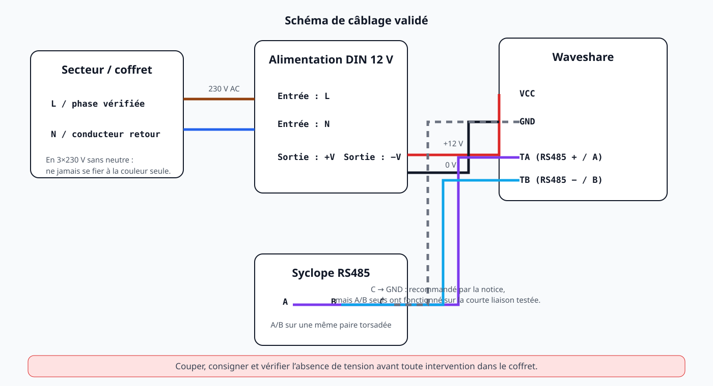
L’alimentation DIN possède :
L et N ;+V et -V ;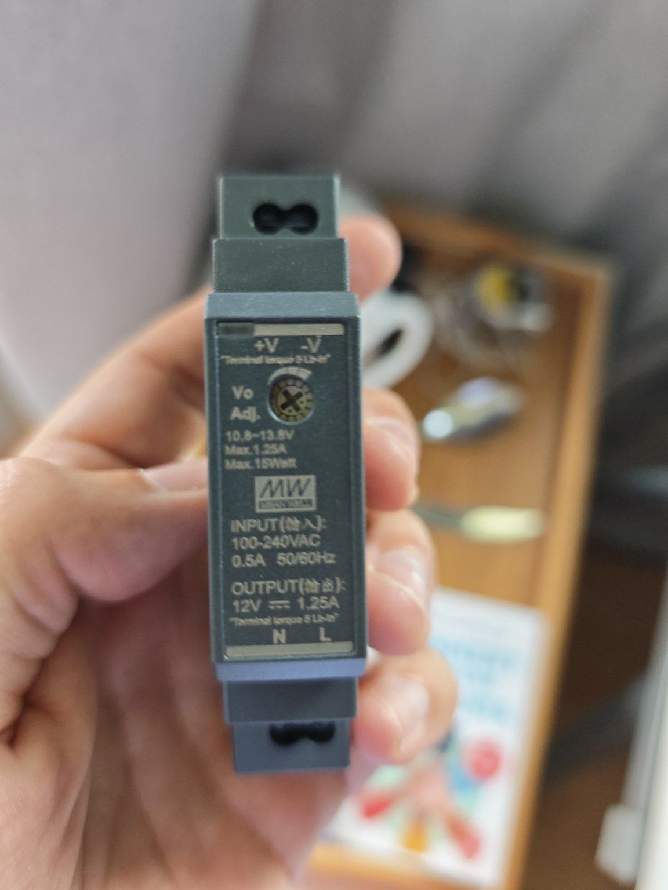
Dans le montage réalisé, l’entrée de l’alimentation a été reprise en aval d’un Schneider C10 existant.
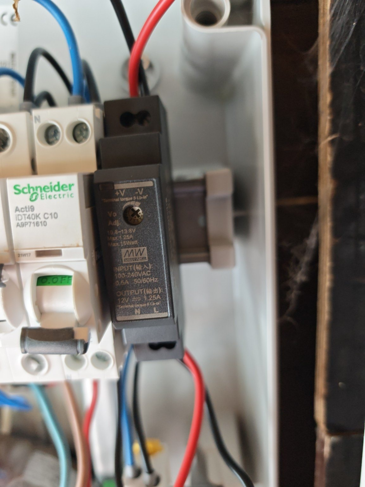
Avant de raccorder le Waveshare :
+V et -V
;+V → VCC et -V → GND.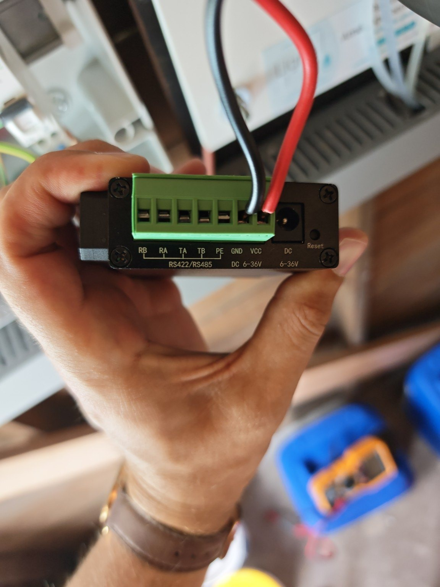
Le bornier du Waveshare est clairement repéré :
RB | RA | TA | TB | PE | GND | VCC
Pour l’alimentation utilisée ici :
VCC ;GND.Le bornier RS485 est situé en haut à gauche de la carte HydroTouch et repéré verticalement :
CBA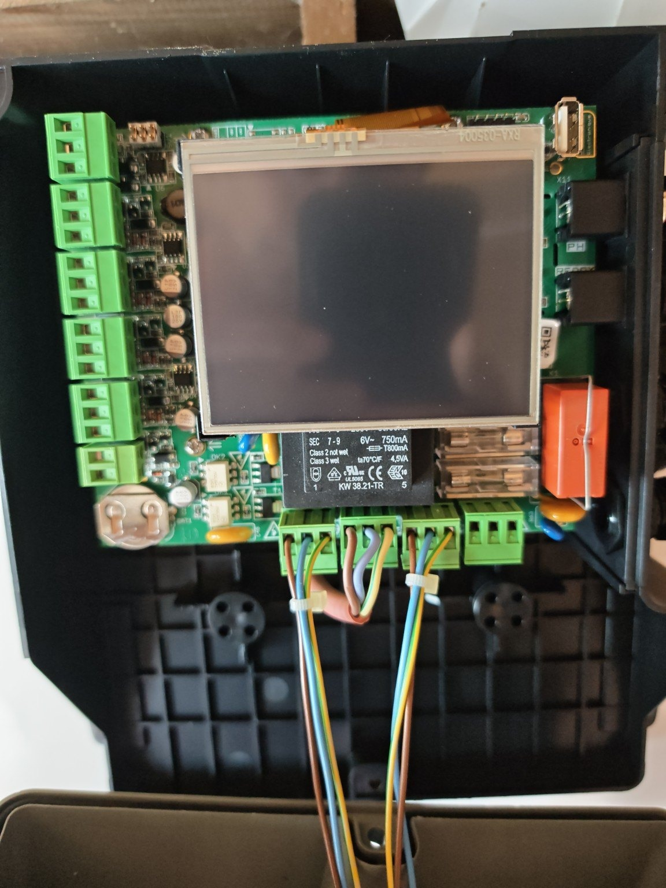
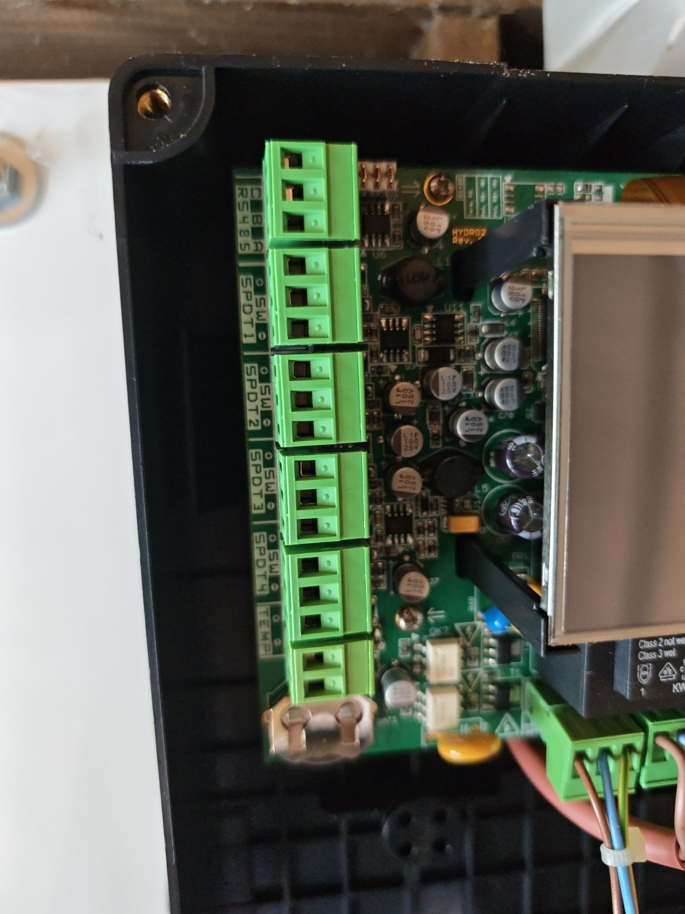
La notice officielle demande de câbler A, B et C.4 Dans la liaison courte testée, A et B seuls ont suffi. Pour une installation plus robuste, surtout avec un câble long ou un environnement perturbé :
A → Waveshare TA ;B → Waveshare TB ;C → Waveshare GND comme conducteur
de référence, après vérification avec le fabricant.Le mapping A/B n’est pas universel entre fabricants. Si aucune réponse n’est obtenue alors que tout le reste est correct, couper l’alimentation et inverser A/B.
Un câble réseau U/UTP à quatre paires AWG24 a été utilisé.
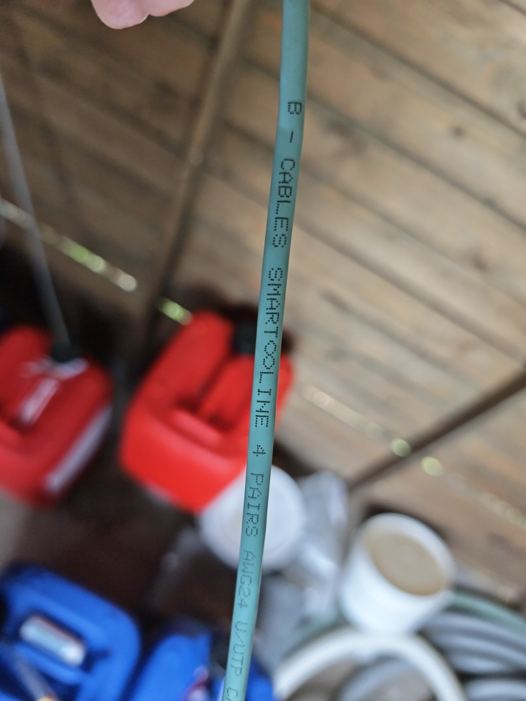
Utiliser les deux conducteurs d’une même paire torsadée :
Ne pas prendre A dans une paire et B dans une autre. Garder les torsades au plus près des borniers. Les autres conducteurs doivent être isolés et rangés.
Pour une liaison longue :
Waveshare précise que, sur une courte distance, ses résistances de terminaison peuvent être laissées hors circuit, tandis que les longues liaisons multi-équipements utilisent typiquement 120 Ω aux deux extrémités.5
Le câble RJ45 du Waveshare rejoint le réseau local, directement ou via un adaptateur CPL.
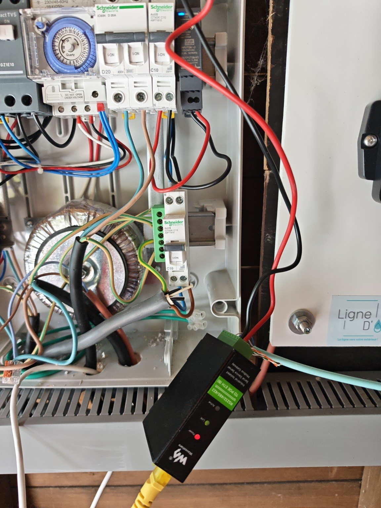
Une fois sous tension :
Power rouge fixe ;Link verte lorsque le lien Ethernet est établi
;Active lors des échanges série.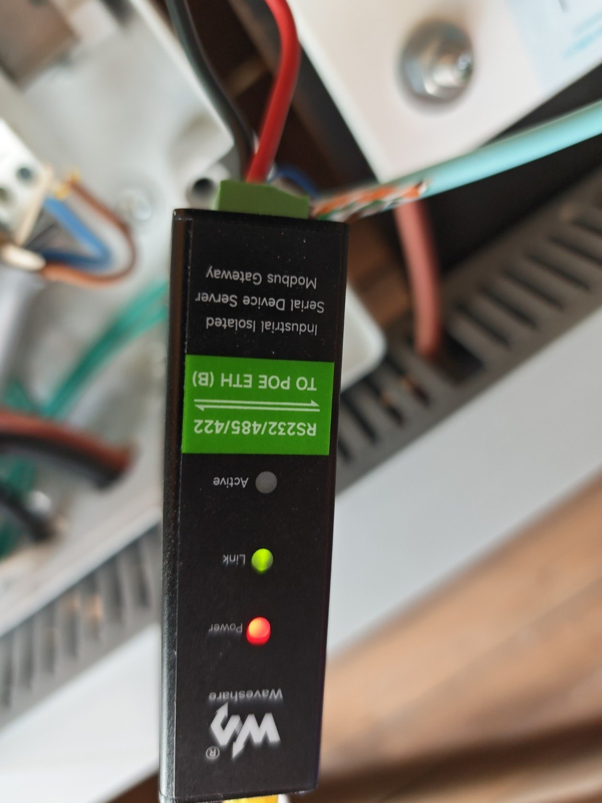
Avant de fermer les coffrets :
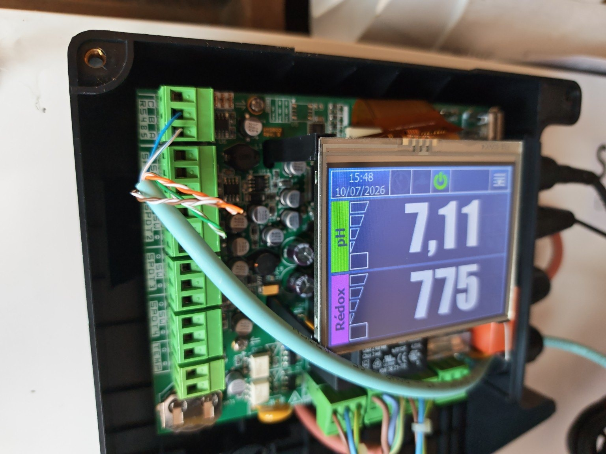
Dans le menu installateur :
Paramétrage communication
Les valeurs utilisées sont :
| Paramètre | Valeur |
|---|---|
| Vitesse Modbus | 19200 bauds |
| Parité | Sans |
| Adresse Modbus | 1 |
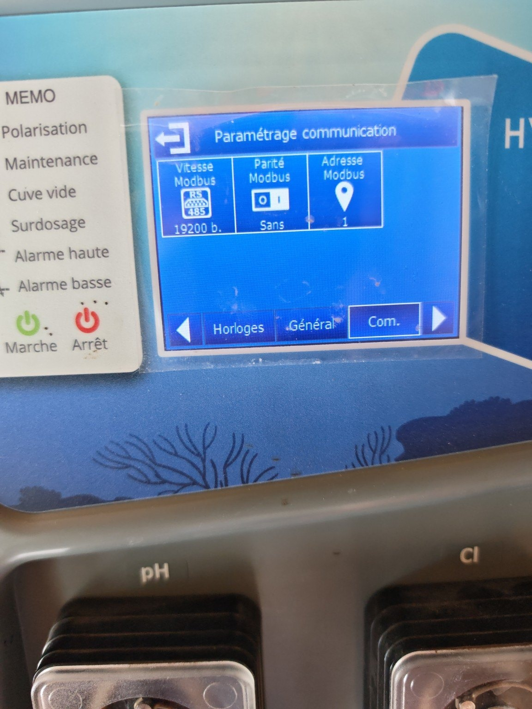
Ces valeurs doivent être identiques dans le Waveshare et dans le client Modbus.
VirCom recherche les serveurs série par diffusion réseau. Il peut
donc voir un appareil qui n’est pas encore dans le même sous-réseau IP
que le PC, alors que arp -a peut ne rien montrer.
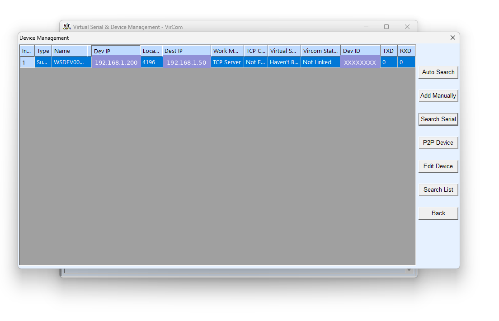
arp -a n’était pas concluantLa table ARP :
VirCom utilise sa propre découverte par broadcast, ce qui explique qu’il ait trouvé le Waveshare alors que la table ARP ne le révélait pas.
Configuration d’exemple utilisée dans la :
Adresses d’exemple.
192.168.1.200,192.168.1.1et192.168.1.50sont utilisées uniquement pour illustrer la procédure. Remplacez-les par les adresses de votre propre réseau local et réservez l’adresse du Waveshare dans votre routeur.
| Paramètre | Valeur |
|---|---|
| IP | 192.168.1.200 |
| Masque | 255.255.255.0 |
| Passerelle | 192.168.1.1 |
| Mode IP | Static |
| Work Mode | TCP Server |
| Port données série | 4196 |
| Port interface web | 502 |
| Multi-host | No |
| Protocol | None / transmission transparente |
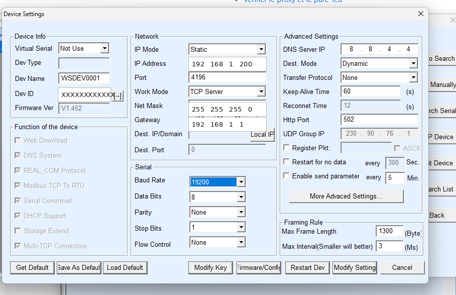
Attention au port 502. Dans cette configuration précise,
502est le port HTTP de gestion du Waveshare. Les trames Modbus passent sur 4196. Le fait que 502 soit habituellement le port Modbus TCP ne change pas cette configuration personnalisée.
L’interface web était donc accessible avec :
http://192.168.1.200:502
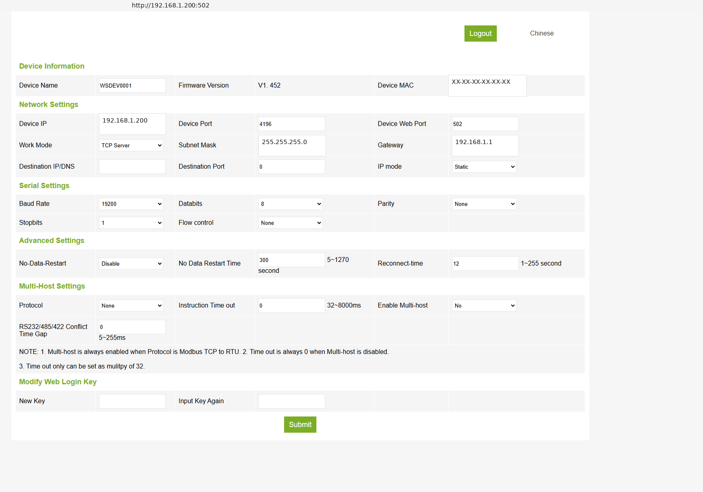
| Paramètre | Valeur |
|---|---|
| Baud Rate | 19200 |
| Data bits | 8 |
| Parity | None |
| Stop bits | 1 |
| Flow control | None |
Le point essentiel découvert pendant le diagnostic est le framing réseau :
Le Waveshare est utilisé comme serveur série TCP transparent. Le constructeur documente le mode TCP Server, le port de données 4196 dans ses exemples et la prise en charge de la transmission série/Ethernet.6
Dans PowerShell :
Test-NetConnection 192.168.1.200 -Port 4196
Test-NetConnection 192.168.1.200 -Port 502Le résultat attendu pour chaque port est :
TcpTestSucceeded : True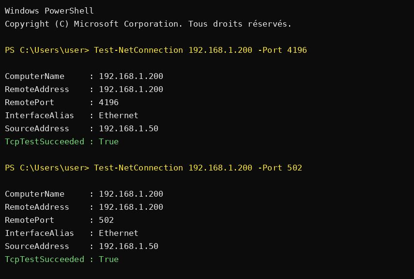
Un TcpTestSucceeded : True prouve uniquement que le
socket TCP est ouvert. Il ne prouve pas encore que le Syclope répond en
Modbus.
192.168.1.50/24 ;Dans Modbus Poll, choisir :
192.168.1.200 ;4196.Ne pas choisir le Modbus TCP classique pour cette configuration.
Dans Setup → Read/Write Definition :
| Champ | Valeur |
|---|---|
| Slave ID | 1 |
| Function | 03 Read Holding Registers |
| Address | 0 |
| Quantity | 10 |
| Scan rate | 1000 ms |
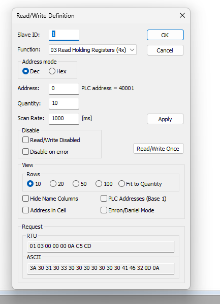
Une réponse avec des valeurs numériques, même incompréhensibles, confirme :
La fonction 04 Read Input Registers a renvoyé :
01 Illegal Function
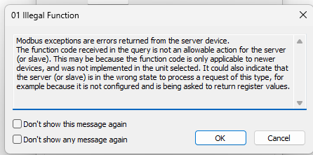
C’est une information utile, pas une panne :
La suite des recherches s’est donc faite exclusivement avec la fonction 03.
La table de registres détaillée du CHY0444 n’étant pas disponible publiquement, les registres ont été identifiés par lecture systématique et corrélation avec l’écran.
Le client TCP se connectait :
Connexion TCP : Truemais ne recevait aucune réponse à la requête. La cause était le
framer par défaut de ModbusTcpClient, qui envoie des trames
Modbus TCP avec en-tête MBAP.
Le Waveshare attendait ici des trames RTU brutes.
La correction décisive :
from pymodbus import FramerType
from pymodbus.client import ModbusTcpClient
client = ModbusTcpClient(
host="192.168.1.200",
port=4196,
framer=FramerType.RTU,
timeout=3,
retries=0,
)La même lecture a alors renvoyé exactement les valeurs observées dans Modbus Poll.
Le script fourni dans scripts/scan_syclope.py lit les
Holding Registers par blocs et génère :
Commande avec l’adresse d’exemple :
pip install -r scripts\requirements.txt
python scripts\scan_syclope.py --host 192.168.1.200 --start 0 --end 5000 --block 100Les scripts acceptent également SYCLOPE_HOST,
SYCLOPE_PORT et SYCLOPE_DEVICE_ID comme
variables d’environnement. Un modèle est fourni dans
.env.example.
Le scan réel a identifié des zones actives notamment :
Les fichiers bruts sont fournis dans le dossier
data/.
Modbus Poll affichait :
Address 1202 → PLC address 41203La conversion utilisée est :
adresse PLC = 40001 + adresse 0-basedDonc :
| Donnée | Registre PLC | Adresse Home Assistant / PyModbus |
|---|---|---|
| pH | 41203 | 1202 |
| Redox | 41303 | 1302 |
Chaque mesure occupe deux registres 16 bits.
Pour le pH, un scan a donné :
0x8D55 ;0x40E5.L’ordre brut n’est pas ABCD mais CDAB : les deux mots 16 bits sont inversés.
En Python :
raw = second.to_bytes(2, "big") + first.to_bytes(2, "big")
value = struct.unpack(">f", raw)[0]Dans Home Assistant, l’équivalent est :
data_type: float32
swap: wordLa documentation Home Assistant définit précisément
swap: word comme la transformation ABCD → CDAB et indique
qu’un float32 occupe deux registres.7
| Mesure | Registre PLC | Adresse 0-based | Fonction | Type | Ordre |
|---|---|---|---|---|---|
| pH actuel | 41203 | 1202 | 03 | float32 | CDAB |
| Redox actuel | 41303 | 1302 | 03 | float32 | CDAB |
Test direct validé :
pH: 7.169264793395996
Redox: 882.35205078125L’écran affichait au même moment environ 7,17 et 882 mV :
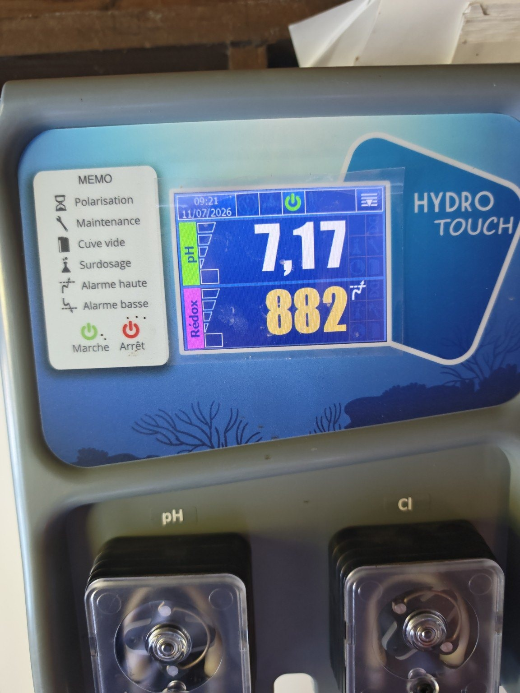
| Signification probable | Registre PLC | Adresse | Valeur observée |
|---|---|---|---|
| Consigne pH | 41205 | 1204 | 7,20 |
| Seuil haut pH probable | 41209 | 1208 | 8,50 |
| Seuil bas pH probable | 41211 | 1210 | 6,80 |
| Consigne Redox | 41305 | 1304 | 700 mV |
| Seuil haut Redox probable | 41309 | 1308 | 850 mV |
| Seuil bas Redox probable | 41311 | 1310 | 500 mV |
Ne pas confondre ces valeurs avec les limites de réglage visibles dans le menu :
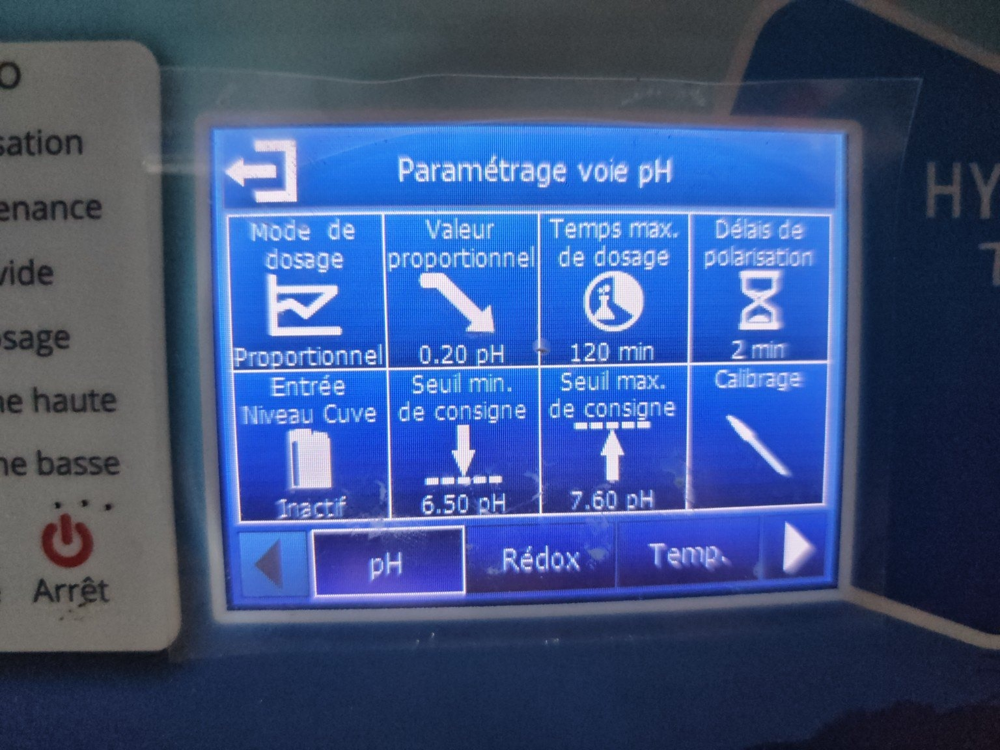
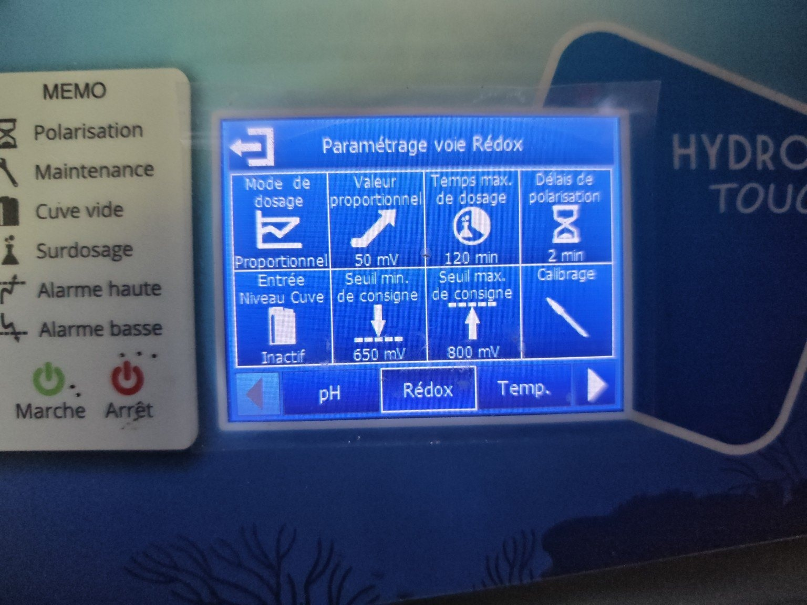
Les registres candidats doivent être confirmés en modifiant temporairement un paramètre, en réalisant deux scans et en comparant les CSV. Aucune écriture Modbus ne doit être tentée avant cette validation.
Le fichier détaillé data/register_map.csv distingue les
registres confirmés des hypothèses.
Le fichier scripts/test_syclope.py effectue la lecture
finale.
pip install pymodbus
python scripts\test_syclope.pySortie attendue :
pH: 7.1693
Redox: 882.35 mVFermer Modbus Poll avant le test : le multi-host était désactivé sur le Waveshare, et une connexion ouverte peut monopoliser le port.
Home Assistant prend en charge explicitement le type
rtuovertcp, destiné aux forwarders TCP vers liaison
série.8
Ajouter dans configuration.yaml :
modbus:
- name: syclope_hydrotouch
type: rtuovertcp
host: 192.168.1.200
port: 4196
timeout: 5
message_wait_milliseconds: 100
sensors:
- name: "Syclope pH"
unique_id: syclope_ph
slave: 1
address: 1202
input_type: holding
data_type: float32
swap: word
precision: 2
scan_interval: 15
state_class: measurement
unit_of_measurement: "pH"
- name: "Syclope Redox"
unique_id: syclope_redox
slave: 1
address: 1302
input_type: holding
data_type: float32
swap: word
precision: 0
scan_interval: 15
state_class: measurement
unit_of_measurement: "mV"Le même bloc est disponible dans :
home-assistant/configuration_modbus.yaml
icon:L’option icon n’est pas acceptée dans la définition d’un
capteur Modbus. L’icône peut être :
Après modification :
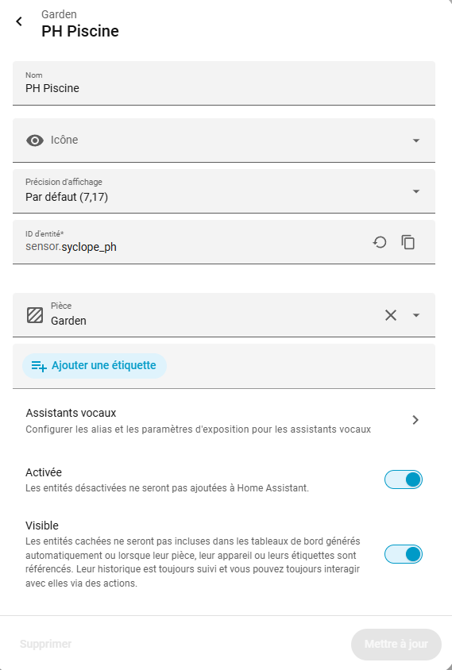
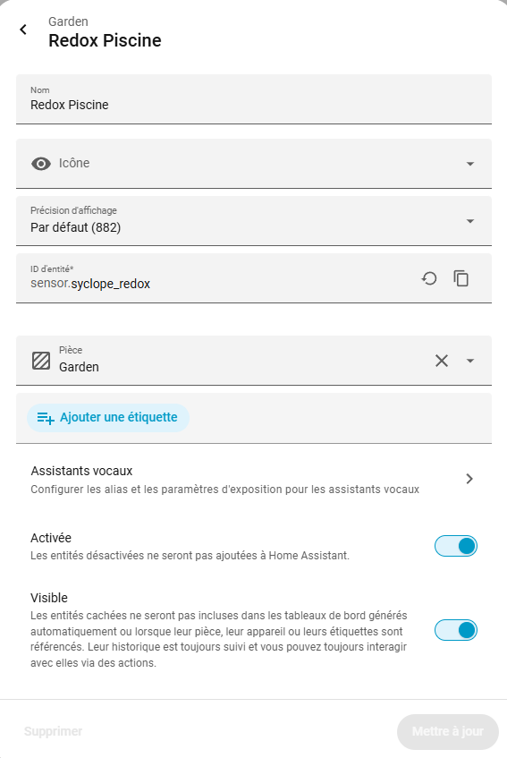
Les identifiants confirmés sont :
sensor.syclope_phsensor.syclope_redoxPour activer des journaux temporaires :
logger:
default: warning
logs:
homeassistant.components.modbus: debug
pymodbus: debugRetirer ou réduire ces logs après diagnostic.
Mushroom peut être installé via HACS. La carte Template accepte les modèles Jinja dans les champs principaux, secondaires, couleur d’icône et badge.9
Le bloc complet est fourni dans :
home-assistant/dashboard_mushroom.yaml
Les zones choisies dans cette installation sont :
| Couleur | Plage |
|---|---|
| Vert | 6,80 à 7,40 |
| Jaune | 6,50–6,80 et 7,40–7,60 |
| Rouge | < 6,50 ou > 7,60 |
| Couleur | Plage |
|---|---|
| Vert | 700 à 780 mV |
| Jaune | 650–700 et 780–800 mV |
| Rouge | < 650 ou > 800 mV |
Extrait de la carte pH :
type: custom:mushroom-template-card
entity: sensor.syclope_ph
primary: >
{{ states('sensor.syclope_ph') | float(0) | round(2) }} pH
secondary: >
{% set v = states('sensor.syclope_ph') | float(0) %}
{% if not has_value('sensor.syclope_ph') %}
Indisponible
{% elif v < 6.5 %}
Trop bas
{% elif v < 6.8 %}
Bas — à surveiller
{% elif v <= 7.4 %}
Zone optimale
{% elif v <= 7.6 %}
Haut — à surveiller
{% else %}
Trop haut
{% endif %}
icon: mdi:ph
icon_color: >
{% set v = states('sensor.syclope_ph') | float(0) %}
{% if not has_value('sensor.syclope_ph') %}
grey
{% elif 6.8 <= v <= 7.4 %}
green
{% elif 6.5 <= v <= 7.6 %}
amber
{% else %}
red
{% endif %}| Symptôme | Cause probable | Action |
|---|---|---|
| Power éteinte | Absence de 12 V ou polarité inversée | Mesurer VCC/GND |
| Link éteinte | Câble ou CPL sans lien | Tester un câble direct |
| VirCom voit l’appareil, ARP non | Normal : méthodes de découverte différentes | Utiliser VirCom ou connexion directe |
| Port 4196 fermé | Mauvaise IP, firewall ou mode | Vérifier IP et TCP Server |
| Port ouvert mais aucun Modbus | Mauvais framing | Utiliser RTU over TCP |
| Modbus TCP classique timeout | MBAP envoyé au lieu de RTU | FramerType.RTU / type: rtuovertcp |
Illegal Function avec 04 |
Fonction non supportée | Revenir à 03 |
| Valeurs énormes ou négatives | Mauvais type ou ordre de mots | float32, swap: word |
| pH correct dans Python mais indisponible dans HA | Connexion déjà occupée | Fermer Modbus Poll/scripts |
YAML refuse icon |
Option non admise par le capteur Modbus | Mettre l’icône dans UI/dashboard |
| Valeurs intermittentes | A/B, référence C, parasites, terminaison | Vérifier paire, C/GND, topologie |
| Plus aucune réponse après essais | Session TCP bloquée | Redémarrer le Waveshare |
| Interface web sur 502 mais pas de Modbus | Normal dans cette config | Modbus est sur 4196 |
192.168.1.200 dans le routeur, même si
elle est statique ;L’intégration ne remplace pas :
Le constructeur recommande de confronter régulièrement les mesures affichées à une analyse de référence.10
La version publiée de ce projet a été préparée pour un dépôt GitHub public et un déploiement statique sur Vercel.
| Élément | Traitement dans la |
|---|---|
| Adresses IP | Remplacées par le réseau d’exemple 192.168.1.0/24 |
| Adresse du Waveshare | Exemple 192.168.1.200 |
| Passerelle | Exemple 192.168.1.1 |
| Poste de test | Exemple 192.168.1.50 |
| Adresses MAC / Device ID | Masquées dans les captures |
| Nom d’utilisateur Windows | Remplacé par user |
| SSID, mots de passe et clés | Absents du dépôt |
| Dashboard domestique | Limité aux éléments piscine utiles au guide |
| Photos du coffret | Conservées car nécessaires à la compréhension du câblage ; supprimées |
Les captures VirCom, interface web et PowerShell ont été ou recréées. Les valeurs techniques utiles — ports, paramètres série, firmware, fonction Modbus et registres — ont été conservées.
41203 et Redox 41303 sont
indiqués comme confirmés expérimentalement.| Élément | Valeur |
|---|---|
| Régulateur | Syclope HydroTouch CHY0444 |
| Passerelle | Waveshare RS232/485/422 TO POE ETH (B) |
| Firmware Waveshare | V1.452 |
| Date de validation | 11 juillet 2026 |
| Transport | RTU over TCP |
| Port de données | 4196 |
| Port web observé | 502 |
Le fichier PUBLICATION.md
récapitule les choix d’ et sert de avant toute
nouvelle publication.
Le bundle est organisé pour une publication :
index.html : site web ;guide.md : source Markdown ;assets/ : photos, captures et schémas
;scripts/ : scripts Python configurables ;home-assistant/ : YAML prêt à adapter ;data/ : données de rétro-ingénierie et rapport
;PUBLICATION.md : notes de et de
publication.SYCLOPE Electronique, Notice technique HYDRO TOUCH pH et Rédox, section 4.5.3.4, raccordement du port RS485 et consignes de sécurité. https://www.syclope.fr/wp-content/uploads/2018/07/DOC0370-Notice-technique-HYDRO-TOUCH-pH-Pompe-Redox-Pompe.pdf↩︎
Waveshare, RS232/485/422 TO POE ETH (B) Wiki : alimentation 6–36 V/PoE, TCP Server, VirCom, port 4196, fonctions Modbus et recommandations de terminaison. https://www.waveshare.com/wiki/RS232/485/422_TO_POE_ETH_%28B%29↩︎
MEAN WELL, HDR-15 Series Specification, modèle HDR-15-12 : 12 V, 1,25 A, 15 W. https://www.meanwell.com/Upload/PDF/HDR-15/HDR-15-SPEC.PDF↩︎
SYCLOPE Electronique, Notice technique HYDRO TOUCH pH et Rédox, section 4.5.3.4, raccordement du port RS485 et consignes de sécurité. https://www.syclope.fr/wp-content/uploads/2018/07/DOC0370-Notice-technique-HYDRO-TOUCH-pH-Pompe-Redox-Pompe.pdf↩︎
Waveshare, RS232/485/422 TO POE ETH (B) Wiki : alimentation 6–36 V/PoE, TCP Server, VirCom, port 4196, fonctions Modbus et recommandations de terminaison. https://www.waveshare.com/wiki/RS232/485/422_TO_POE_ETH_%28B%29↩︎
Waveshare, RS232/485/422 TO POE ETH (B) Wiki : alimentation 6–36 V/PoE, TCP Server, VirCom, port 4196, fonctions Modbus et recommandations de terminaison. https://www.waveshare.com/wiki/RS232/485/422_TO_POE_ETH_%28B%29↩︎
Home Assistant, Modbus integration :
rtuovertcp, float32, swap: word,
précision et configuration des capteurs. https://www.home-assistant.io/integrations/modbus/↩︎
Home Assistant, Modbus integration :
rtuovertcp, float32, swap: word,
précision et configuration des capteurs. https://www.home-assistant.io/integrations/modbus/↩︎
piitaya, Lovelace Mushroom, installation et cartes Template. https://github.com/piitaya/lovelace-mushroom↩︎
SYCLOPE Electronique, Notice technique HYDRO TOUCH pH et Rédox, section 4.5.3.4, raccordement du port RS485 et consignes de sécurité. https://www.syclope.fr/wp-content/uploads/2018/07/DOC0370-Notice-technique-HYDRO-TOUCH-pH-Pompe-Redox-Pompe.pdf↩︎